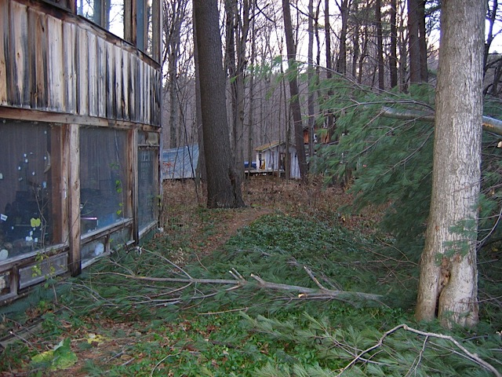
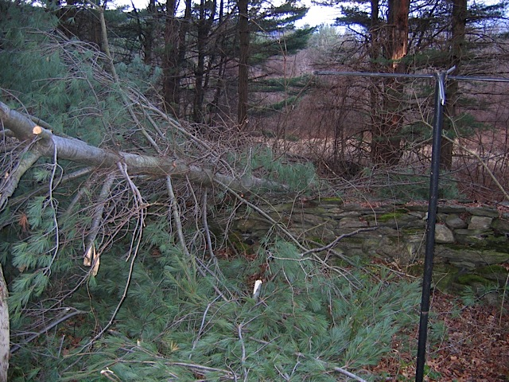
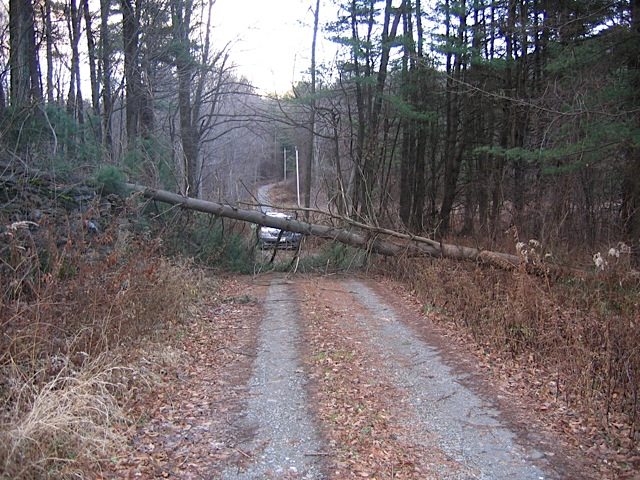
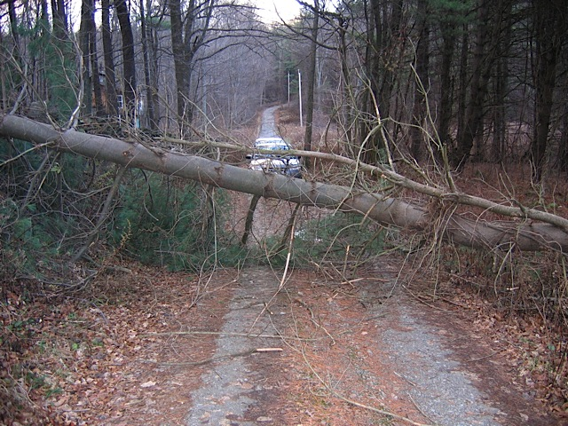
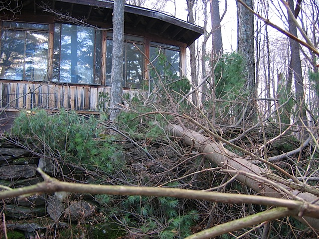
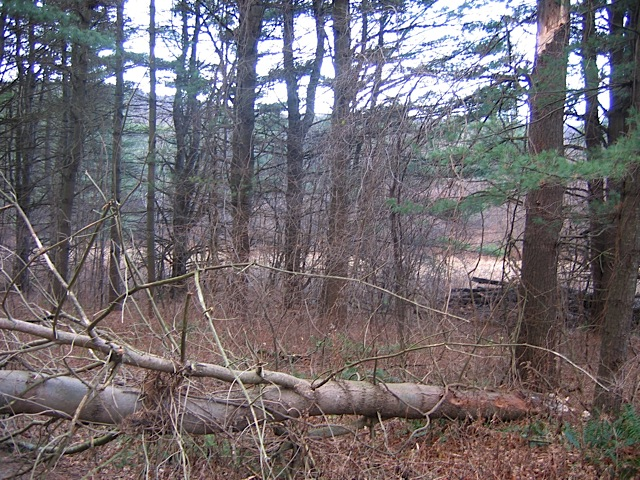
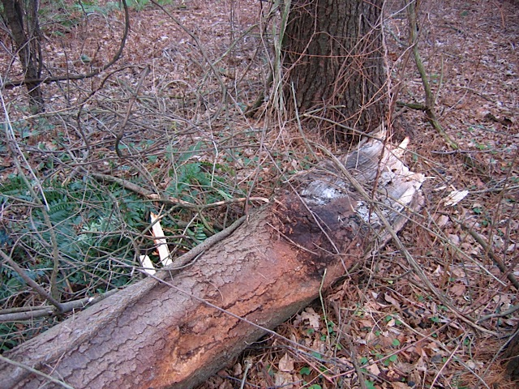
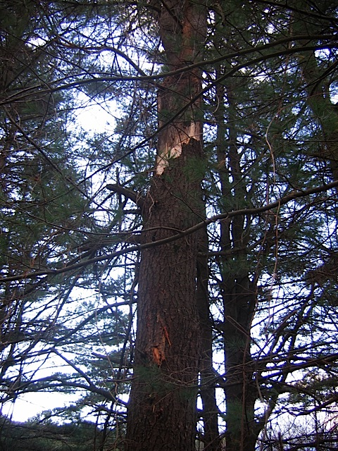
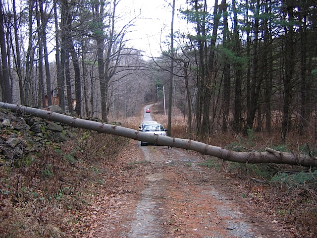
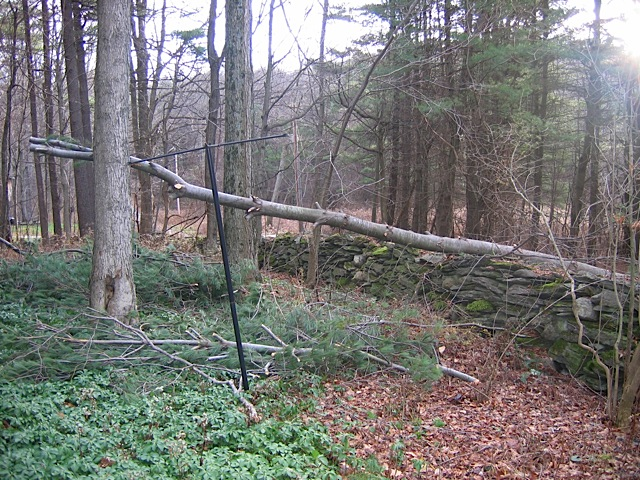

On the night of Friday, December 1, 2006, while my family was attending a tree lighting at the local fire house, it was raining, blowing, and thundering. When we got home, we encountered a tree across the road. We left our cars in front of the tree, and went around it through the neighbor's field. This page documents that event.
I cut off the portion of the tree that was blocking the path by the front of the house on Friday night. Here I laid the cut-off pieces on the ground to show how close it came to hitting the house

Here's the top of the tree, where it fell over our Shaker stone wall.

And here's the whole tree as seen from the road.

A closer view of the tree over the road.

And a view from the bottom of the tree over the wall.

It actually wasn't a whole tree that fell. It was one of three branches of the top 2/3 of a tree. Here you can see the bottom of the broken branch and the place where it broke off from the top of the tree.

Here's a close-up of the break point.

And the part of the tree that is still standing.

Here's the part over the road after I cut off the small branches with my bow saw.

And the denuded top part.

I don't own a chain saw. I asked a friend to make five or six cuts with his. Then I can drag the pieces off the road, and be back in business.
My friend came over, made 5 quick cuts on the top part of the tree, five, more involved, cuts, on the bottom part of the tree, and I moved the chunks off the road. He had been wanting to build an awning from some plans he had, and had thought he'd make it in pine. He dragged away to his wood pile a ten-foot section of the tree for that purpose.